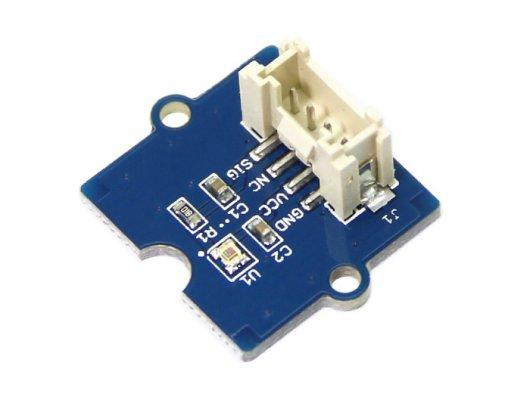
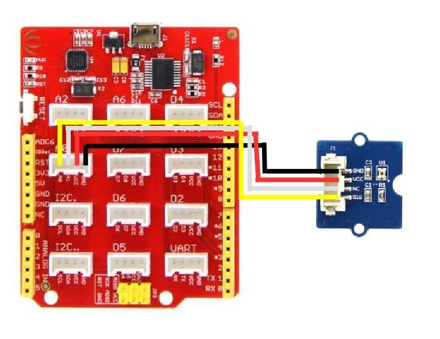
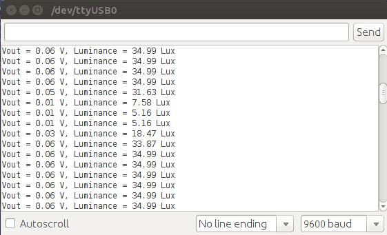

Grove - Luminance Sensor detects the intensity of the ambient light on a surface area. It uses APDS-9002 analog output ambient light photo sensor. This has responsivity closer to human eye.
This Luminance Sensor can be used in application which requires automatic light adjustment in residential or commercial lighting.

| Parameter | Value |
|---|---|
| Vcc | 2.4V ~ 5.5V |
| Linear output range | 0.0 ~ 2.3V |
| Luminance measurement range | 0 ~ 1000 Lux |
1.Plug the Grove-Luminance sensor to the A0 port of Seeeduino Lotus with a Grove connector.

2.Copy the following code in an arduino sketch.
float VoutArray[] = { 0.0011498, 0.0033908, 0.011498, 0.041803,0.15199, 0.53367, 1.3689, 1.9068, 2.3};
float LuxArray[] = { 1.0108, 3.1201, 9.8051, 27.43, 69.545, 232.67, 645.11, 73.52, 1000};
void setup() {
// put your setup code here, to run once:
Serial.begin(9600);
}
void loop() {
// put your main code here, to run repeatedly:
Serial.print("Vout =");
Serial.print(readAPDS9002Vout(A0));
Serial.print(" V,Luminance =");
Serial.print(readLuminance(A0));
Serial.println("Lux");
delay(500);
}
float readAPDS9002Vout(uint8_t analogpin)
{
// MeasuredVout = ADC Value * (Vcc / 1023) * (3 / Vcc)
// Vout samples are with reference to 3V Vcc
// The above expression is simplified by cancelling out Vcc
float MeasuredVout = analogRead(A0) * (3.0 / 1023.0);
//Above 2.3V , the sensor value is saturated
return MeasuredVout;
}
float readLuminance(uint8_t analogpin)
{
// MeasuredVout = ADC Value * (Vcc / 1023) * (3 / Vcc)
// Vout samples are with reference to 3V Vcc
// The above expression is simplified by cancelling out Vcc
float MeasuredVout = analogRead(A0) * (3.0 / 1023.0);
float Luminance = FmultiMap(MeasuredVout, VoutArray, LuxArray, 9);
/**************************************************************************
The Luminance in Lux is calculated based on APDS9002 datasheet -- > Graph 1
( Output voltage vs. luminance at different load resistor)
The load resistor is 1k in this board. Vout is referenced to 3V Vcc.
The data from the graph is extracted using WebPlotDigitizer
http://arohatgi.info/WebPlotDigitizer/app/
VoutArray[] and LuxArray[] are these extracted data. Using MultiMap, the data
is interpolated to get the Luminance in Lux.
This implementation uses floating point arithmetic and hence will consume
more flash, RAM and time.
The Luminance in Lux is an approximation and depends on the accuracy of
Graph 1 used.
***************************************************************************/
return Luminance;
}
//This code uses MultiMap implementation from http://playground.arduino.cc/Main/MultiMap
float FmultiMap(float val, float * _in, float * _out, uint8_t size)
{
// take care the value is within range
// val = constrain(val, _in[0], _in[size-1]);
if (val <= _in[0]) return _out[0];
if (val >= _in[size-1]) return _out[size-1];
// search right interval
uint8_t pos = 1; // _in[0] allready tested
while(val > _in[pos]) pos++;
// this will handle all exact "points" in the _in array
if (val == _in[pos]) return _out[pos];
// interpolate in the right segment for the rest
return (val - _in[pos-1]) * (_out[pos] - _out[pos-1]) / (_in[pos] - _in[pos-1]) + _out[pos-1];
}
3.Upload the code to seeeduino lotus.
4.Hold the Grove Luminance sensor under a light source or in a place where lux has to be detected.
5.Open the serial monitor.

6.The Vout and Lux is displayed in the serial monitor.